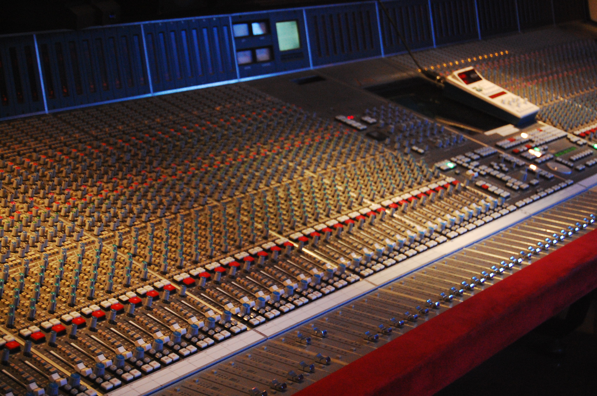
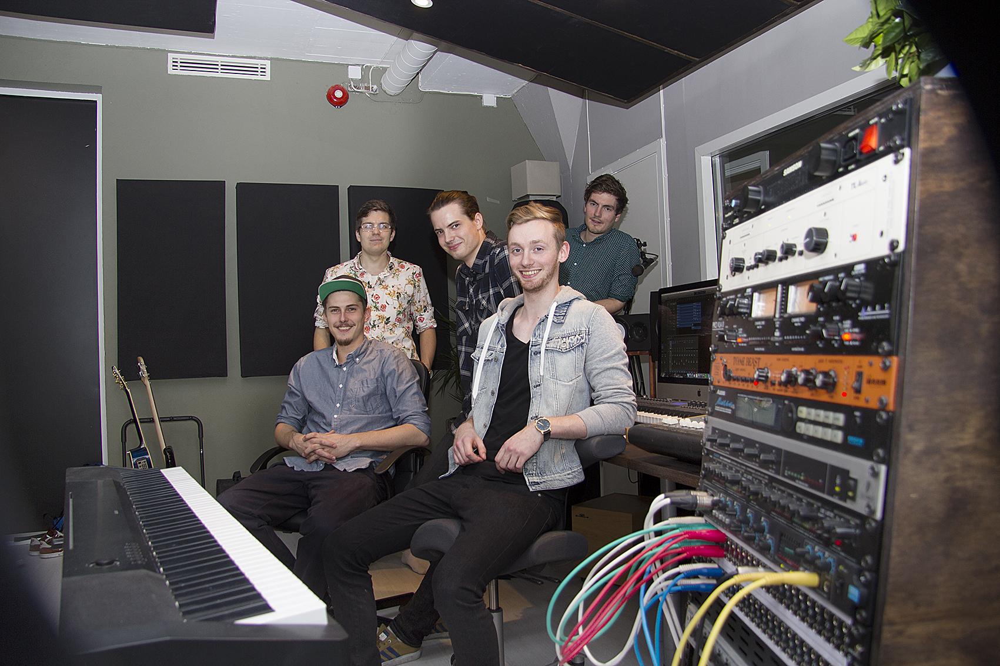

Innspilling
40+10 m2 Day light and good ventilation. 24 lines in Pro Tools HD, vintage outboards and Apogee AD/DA. Good coffe and a calm environment with silencing walls. Perfect for recording smaller or medium sized projects.

Miks
Espen mixes all from pop, rock and electronica to filmmusic. He works on a fantastic Neve VR48 imported from Pinewood Film Studios in London. His style is analog/digital with calassic outboards from the 70s.

Produksjon
Most productions need a pure expression and an experienced and attentive. Per Kristian has worked as a musician and has experience from a wide range of music, movie and television productions.